5 projects
SketchUp & Heritage 3D
Historic Iași rebuilt in 3D: the Princely Court, VR stories, the Palace of Culture and 3D-printed models.
3D Environment Artist · Graphic Designer · Visual Storyteller
Self-taught 3D artist and designer from Iași, Romania, with 6+ years in digital art, game assets, cultural heritage reconstruction and AI-assisted production.
Software I use


5 projects
Historic Iași rebuilt in 3D: the Princely Court, VR stories, the Palace of Culture and 3D-printed models.

7 projects
Game-ready props and fan art: weapons, a camera, a creature, a city bus and terrain studies.


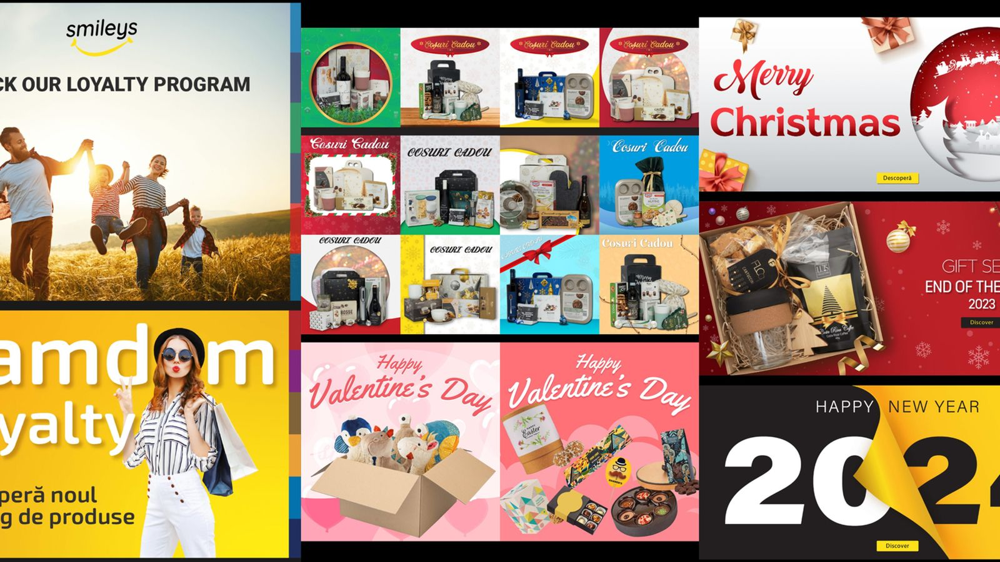


Environment · 3D reconstruction · 3D printing
Five evolutionary stages of the Princely Court of Iași, rebuilt in 3D from historical research and printed as physical models for an exhibition at the Palace of Culture.
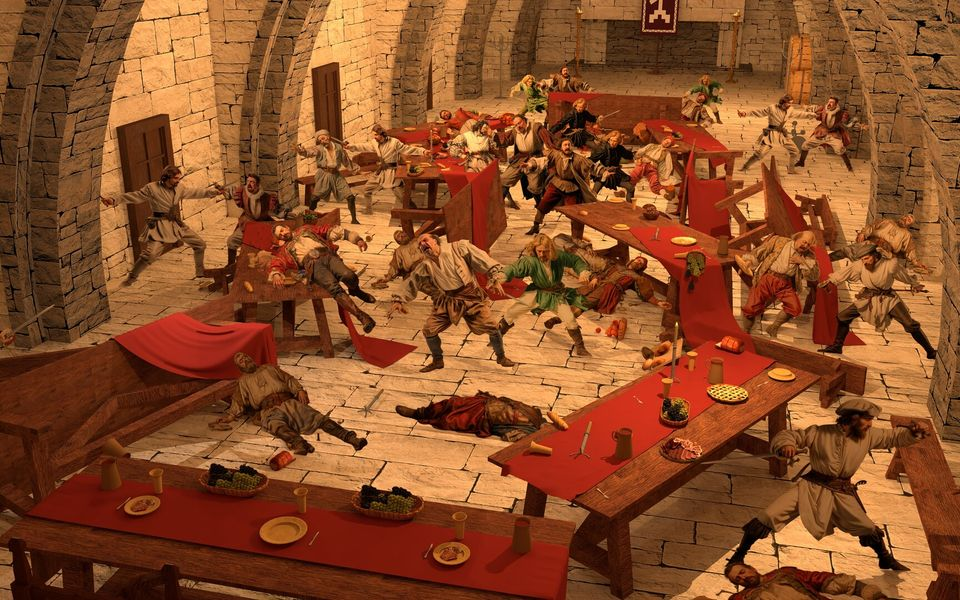
Environment · VR storytelling
Discovering the Royal Court of Iași through virtual reality: five historical stories turned into explorable 3D scenes.
Environment · Architectural 3D
The building on the site of the Princely Court, modelled era by era, from the 1806 palace to the Palace of Culture we know today.

Environment · Architectural 3D
Landmark buildings of Iași modelled in SketchUp, shown as clean clay renders and full-color versions.
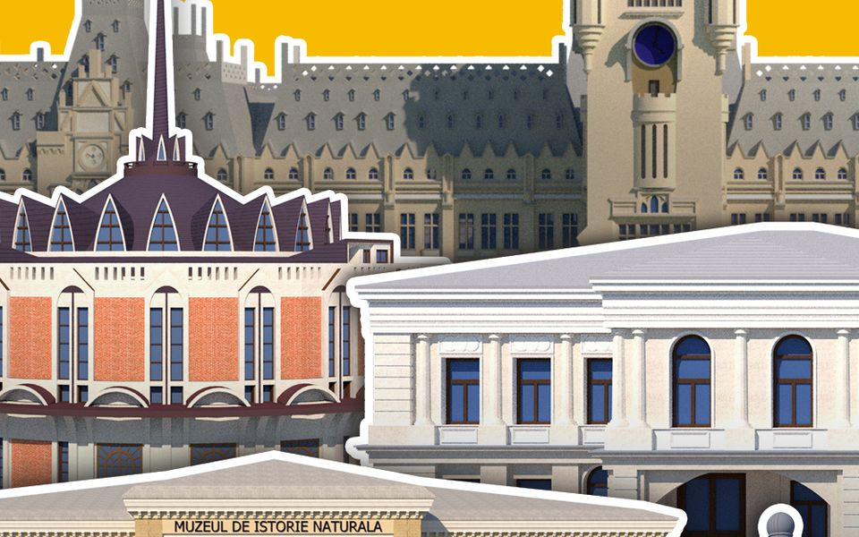
3D printing · Exhibition
From the 3D model to a real object: printed building models prepared for public display.

Game Art · Hard-surface prop
A SIG MCX-Spear rifle, rebuilt from every reference I could find on Google, YouTube and in Escape from Tarkov.
Game Art · Character model
A Digimon character modelled, unwrapped and textured as a game-ready asset.
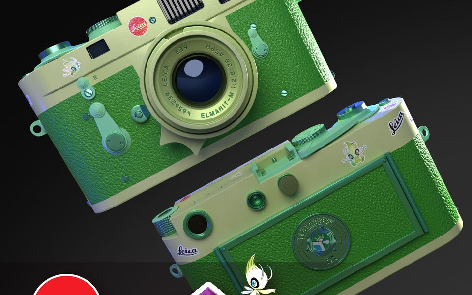
Game Art · Prop
A Leica camera with a Pokémon twist, modelled and textured for real-time rendering.
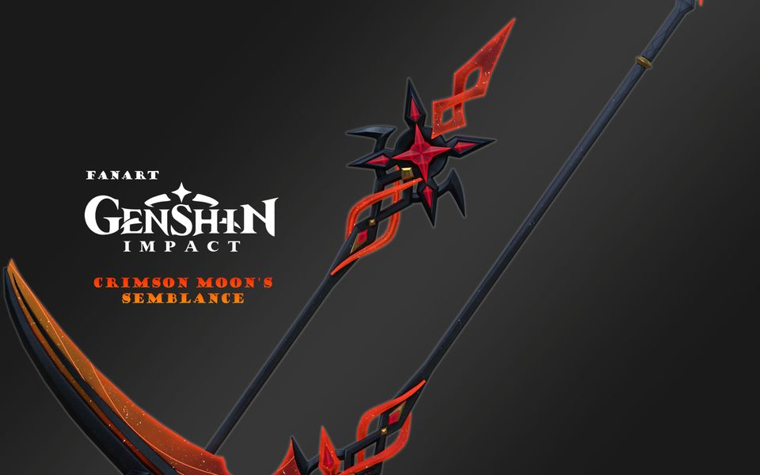
Game Art · Stylized weapon
A stylized polearm inspired by Genshin Impact, from wireframe and UVs to final textures.

Game Art · Hard-surface prop
A revolver inspired by Cyberpunk 2077, with beauty shots, wireframe, UVs and texture maps.
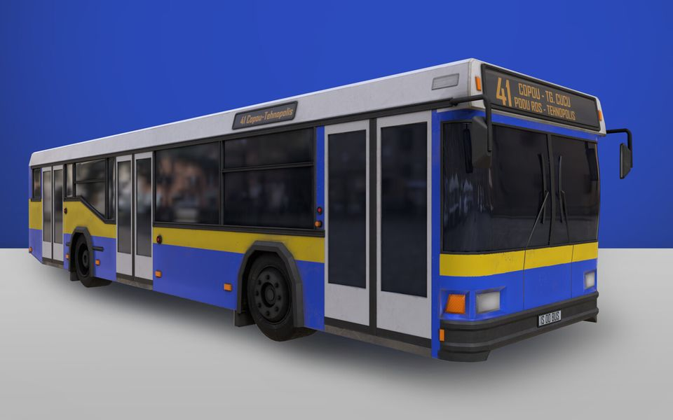

Environment · Terrain
Terrain studies: mountains, coastlines and islands built with the eye of a geographer.
Environment · Unreal Engine 5
Fan art of the Marsh House from Studio Ghibli's When Marnie Was There, built as a real-time scene in Unreal Engine 5.
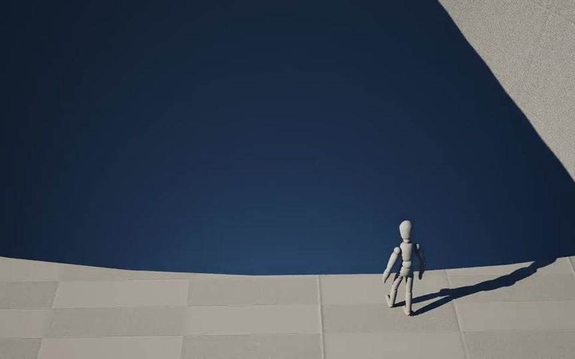
Game Art · Level design
A playable space blocked out in Unreal Engine 5.
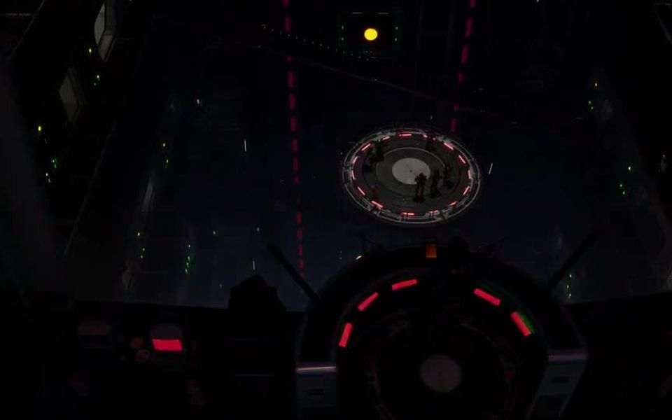
Environment · Unreal Engine 5
A short cinematic of a sci-fi interior, lit and rendered in Unreal Engine 5.


3D Fashion · CLO 3D
Jacket, trousers and tee designed as a set, with fabric simulation in CLO 3D.

3D Fashion · CLO 3D
A long medieval-style gown with sleeves and trims, simulated in CLO 3D.
3D Fashion · CLO 3D
A character outfit inspired by Frieren, built pattern by pattern in CLO 3D.
Illustration · Character art
Characters, covers and scenes drawn digitally, from cozy interiors to dark fantasy.
Graphic Design · Web banners · Email marketing
Campaign visuals for a promotional products distributor: brand launches, seasonal offers and a loyalty program, in Romanian and Dutch.
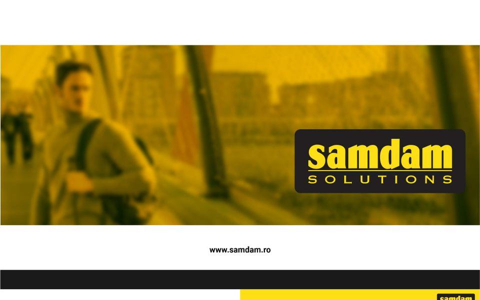
Graphic Design · Product presentation · Print
Product pages, brand stories and newsletters that present each collection clearly, from a backpack line to a full cookware range.
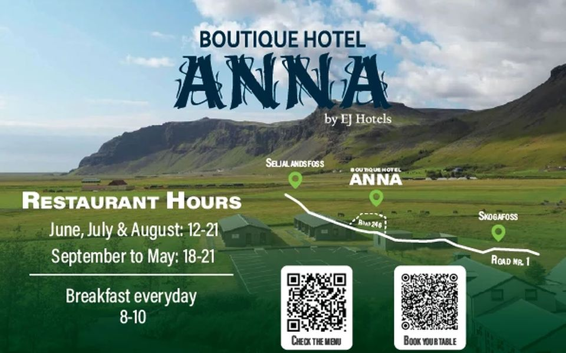
Graphic Design · Print
Information flyers for Boutique Hotel Anna and Hótel Skógafoss in Iceland: opening hours, services and QR codes, in a clean layout guests read in seconds.
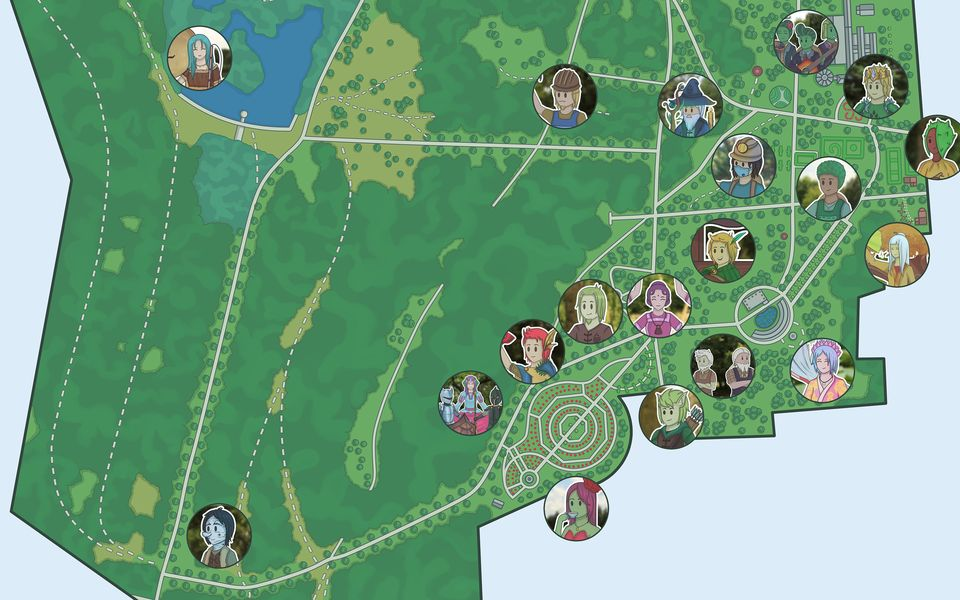
Storytelling · Treasure hunt
A story-driven treasure hunt that turns the Botanical Garden of Iași into a medieval realm where plants become characters, guardians and guides.
Storytelling · Graphic design
An exploration tour and outdoor information panels along a WWII commemorative route through the Letea Forest and Rediu, built on archival research.
Companies I have worked with


More on ArtStation and Behance.
I hold a Master's degree in Tourism and Spatial Geography, which shapes how I approach 3D: real-world lighting, environmental realism and spatial architecture. I have reconstructed historic landmarks for 3D printing, built VR heritage experiences, modelled props for mobile games and created marketing campaigns for brands.
Today I work as Marketing Assistant at Twinkle Star, a Cambridge Exam Centre in Iași, producing video, animation and design for multi-channel campaigns.
Blender, Maya, SketchUp, V-Ray, Marmoset Toolbag, Substance Painter, RizomUV, Unity, Unreal Engine 5, 3D print prep
Photoshop, Illustrator, Figma, DaVinci Resolve, Clip Studio Paint, Lightroom, Aseprite
Runway, Luma, LTX Studio, MidJourney, ElevenLabs, Suno, Udio, ChatGPT, Claude
Multi-channel marketing assets, video graphics and educational materials.
End-to-end development of an original board game: mechanics, narrative, team and manufacturing.
Game-ready 3D props from 2D sketches for mobile games.
AI-driven production pipeline for visual storytelling assets and series scripts.
Print-ready mockups, product branding and digital banners for national and international clients.
Historic landmarks recreated in 3D and optimized for 3D printing with municipal and cultural partners.
High-volume retouching, color correction and QA for global e-commerce images.
Education: MSc Geography (Tourism & Regional Development) and BSc Tourism Geography, Alexandru Ioan Cuza University, Iași. Both theses graded 10/10.
Open to 3D, design and visual storytelling projects.
btudor.kon@gmail.com